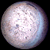
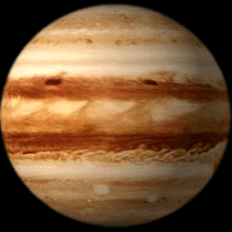
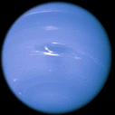
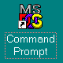
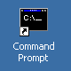
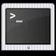

| 13 Planets (size proportional to Sqrt(Radius)) | ||||||||||||||
|  |  |  | See Key |
|||||||||||
| #2 | Rock: Low-G, Cold, Airless |
| #3 | Terrestrial: Cool, Wet |
| #4 | Water: High-G, Extremely thick atmosphere |
| Tau Ceti | |||||||||||||||||||||||||||||||
|---|---|---|---|---|---|---|---|---|---|---|---|---|---|---|---|---|---|---|---|---|---|---|---|---|---|---|---|---|---|---|---|
| |||||||||||||||||||||||||||||||
| |||||||||||||||||||||||||||||||
This file contains the basic documentation for installing and using StarGen. At some point it may also document some of the algorithms and techniques used in StarGen. For now, see the StarGen Web page. A second page documents building the application from source, for programmers who may want to enhance or alter the program.
Please note: StarGen is a command line program. It will not work simply by clicking on its icon (except in the Classic Mac environment). Therefore, please read the section on Running StarGen.
StarGen is freely distributable on the conditions that you distribute the whole package, that you give credit to at least Stephen Dole, Martyn Fogg, Matt Burdick, Ian Burrell, Carl Burke and Chris Croughton AKA Keris, and me in any derivative works, and that you make a reasonable effort to inform me of any additions you make to it or public distributions that you make of it.
I may be contacted at:
| E-Mail: | brons@eldacur.com |
|---|---|
| Web: | http://www.eldacur.com/~brons/ |
| File | OS | Hardware | Type | Description |
|---|---|---|---|---|
StarGen.sit |
Mac OS | Mac 68K & PPC | Executable | Macintosh executables for 68K and PPC |
StarGen.zip |
Windows | Intel | Executable | Win32 executable |
StarGenSource.sit |
Mac OS | Mac 68K & PPC | Source | Macintosh CodeWarrior source files. |
StarGenSource.zip |
Any | Any | Source | Mac OS X, Mac, Unix and Windows source kit |
If you've downloaded one of the two executable kits, StarGen.sit or stargenexe.zip, all you need to do is expand them and you're done.
If you've downloaded one of the source kits, you'll need to expand them and then follow the appropriate Building StarGen instructions.
Many browsers will expand Zip and StuffIt archives when you download them. If yours didn't then you will have to expand the archive. On a Macintosh, either Mac OS X, or the classic Mac OS, simply drop it on Stuffit Expander.
On Windows there are several programs for expanding zip files: WinZip, PKZIP, StuffIt Expander.
On Mac OS X, Darwin and other Unix, DOS, and OS/2 implementations you can unzip with PKZIP. There are now versions of StuffIt, including the free Expander for Linux and Solaris, as well.
On most Unix systems, including Mac OS X or Darwin, you can unzip the source kit from the command line.
| Old Windows Systems | Windows 2000 | MacOS X |
|---|---|---|
|  |  |  |
On Windows, windows you can also find Command Prompt on the Start Menu:
On Mac OS C, you can find Terminal in the Utilities folder in your Applications folder:
Once you've started up a terminal or command line window, you should change directories into the directory where StarGen is stored. This is typically done with the cd command. You can then run stargen by invoking it with one of these commands:
| Windows | Unix and MacOS X |
|---|---|
C:\>StarGen.exe |
% ./stargen |
If you invoke stargen with no options, it will give a brief usage listing as follows:
% ./stargen
Usage: stargen [options] [system name]
Options:
-s# Set random number seed
-m# Specify stellar mass
-n# Specify number of systems
-i# Number to increment each seed by
-x Use the Solar System's masses/orbits
-X Use the Solar System's orbits
-d Use Dole's 15 nearby stars
-D# Use Dole's system #n
-w Use 51 nearby stars taken from the Web
-W# Use Web system #n
-p Specify the path for the output file
-o Do thumbnails
-t Text-only output
-v# Set verbosity (hex value)
-l List nearby stars and exit
-H Output only systems with habitable planets
-2 Only systems with 2 or more habitable planets
Experimental options (may go away):
-c Output Celestia .ssc file on stdout
-k Incorporate known planets (incomplete)
(use only orbital data at present)
Without -k, -c skips systems with known planets.
-T Like -x but use Titan rather than Saturn
-g Show atmospheric gases
-Z Dump tables used for gases and exit
-M Do moons (highly experimental)
Nearest stars taken from:
http://www.solstation.com/stars.htm
The section listing the Experimental options may very well differ from the ones
shown here and you shouldn't count on those options remaining. To generate
systems, you add the appropriate options from the list above to your StarGen
command. The Command Line Options and
Examples section, below, shows a number of useful combinations. The one to
generate the system at the top of this page is:
| Windows | Unix and MacOS X |
|---|---|
C:\>StarGen.exe -W5 -s48 -g |
% ./stargen -W5 -s48 -g |
When Stargen runs, it creates its files in the html folder (or directory) in your StarGen folder. You should be able to open the HTML files created there with any web browser.
The box labelled Argument Is used for entering the same options that you would enter on the command line if you ran StarGen on a Unix system. Sorry, StarGen was designed to be platform independent, not to have a great Macintosh UI.
As with the Unix version, you must supply options or a System name. If you don't, a text window will appear, containing the following information:
Usage: stargen [options] [system name]
Options:
-s# Set random number seed
-m# Specify stellar mass
-n# Specify number of systems
-i# Number to increment each seed by
-x Use the Solar System's masses/orbits
-X Use the Solar System's orbits
-d Use Dole's 15 nearby stars
-D# Use Dole's system #n
-w Use 51 nearby stars taken from the Web
-W# Use Web system #n
-p Specify the path for the output file
-o Do thumbnails
-t Text-only output
-v# Set verbosity (hex value)
-l List nearby stars and exit
-H Output only systems with habitable planets
-2 Only systems with 2 or more habitable planets
Experimental options (may go away):
-c Output Celestia .ssc file on stdout
-k Incorporate known planets (incomplete)
(use only orbital data at present)
Without -k, -c skips systems with known planets.
-T Like -x but use Titan rather than Saturn
-g Show atmospheric gases
-Z Dump tables used for gases and exit
-M Do moons (highly experimental)
Nearest stars taken from:
http://www.solstation.com/stars.htm
Any time a text window like this appears, you can dismiss it by quitting StarGen. Just type Command-Q, or choose Quit from the File menu. You can either save the contents of the window or discard it.
If you type in the options shown in the picture above, you will create a file called Tau-Ceti-48.html in the html folder located in the same folders as the StarGen application.
From this point, running StarGen is just like on Unix and other command line systems, so, proceed to the next section...
| Option | Description | |
|---|---|---|
| Example | Explanation | |
| -snumber | Set random number seed. This sets the initial value used by the random number generator at the heart of StarGen. This will cause the program to generate the same system each time the same seed and stellar mass are used on any given operating system. In fact, my experience is that the Mac and GNU versions create extremely similar systems. | |
| -s38 -W3 | Create a system around Epsilon Eridani using the same random numbers that were used to create the page that CNN found and pointed to in their story about the real Epsilon Eridani. You can compare your results to mine to see if the random number generator on your operating system operates the same way as on the Mac. | |
| -mnumber | Specify stellar mass. This option allows you to determine the mass of the star used. This also determines the amount of dust and gas used to accrete the planets. | |
| -m.98 | Create a system around a star with a mass 98% that of the sun. | |
| -nnumber | Specify the number of systems to generate. If you combine it with either -d or -w, StarGen will create that many versions of each star. | |
| -s1 -m1 -n10 | Create 10 systems starting with a seed of 1 and using a star with the same mass as the sun. | |
| -inumber | Number to increment each seed by | |
| -s20 -n10 -i2 | Create 10 systems, starting with #20, and incrementing by 2 each time. | |
| -x | Use the Solar System's masses/orbits. This option disables the random generation of planets. Instead it uses the masses and orbits of the planets in the solar system. | |
| -s17 -m1.1 -x | This will place our planets around a sun 10% larger than our sun, moving the habitable zone further out. The seed is used only to set the system number used in the Title of the web page, and for randomizing a few of the environmental variables. | |
| -X | Use the Solar System's orbits. This option allows you to create systems with the same spacing as the solar system. The masses will be different, depending on the amount of dust and gas that each planetesimal accumulates. | |
| -s17 -m1.1 -X | This will create a system that is what the solar system might be like if the sun was about 10% larger than it is. Since the mass of the star is larger, there will be more matter in the initial disk, and the resulting planets will be larger. | |
| -d | Use Dole's 15 nearby stars. This option will cause StarGen to create 15 systems, one for each of the stars listed by Stephen Dole in his book Habitable Planets for Man as most likely to have habitable planets. | |
| -s17 -d | Create 15 systems based on the nearby systems that are listed as most likely to have habitable planets by Dole. | |
| -Dnumber | Use Dole's system #n. This option allows you to simulate a specific star from Dole's list. | |
| -D15 -s127 | This generates system #127 around HR753 A, the star least likely to have a habitable planet among the Dole set. | |
| -w | Use 51 nearby stars taken from the http://www.solstation.com/stars.htm web page. The stars can be listed with the -l option. | |
| -s1723 -w | Create 51 systems based on the nearby systems that are listed as most likely to have habitable planets on the Sol Station Web site. | |
| -Wnumber | Use Web system #n. This option allows you to generate a system for a specific star. | |
| -W1 | Create a system for Alpha Centauri A. | |
| -t | Text-only output. This option generates a simple text-format report rather than the usual HTML. | |
| -t | Create a text file. | |
| -p path | Specify the path for the output file | |
| -p public_html | Generates the HTML files into the public_html directory rather than the default html. Note that you will need to have the GIF files, Key.html and other support files that are normally in the html directory. | |
| -o filename | Output the Thumbnails file to a specific file. This can be used to force StarGen to create a Thumbnail file even if it is only creating a single output file or to direct the thumbnail file to a specific file. | |
| -w -s1 -n10 -i1 -H -p Doubles/ -o index.html |
Runs through all 51 of the Web-derived systems 10 times, listing only those with two habitable planets, outputting the results to the Doubles directory and storing the thumbnails in the index.html file in Doubles. | |
| -v flags | Out more verbose messages. StarGen can output a lot of information
while it is running to allow you monitor its progress, find certain
kinds of systems or debug the program itself.
Which bits of information are determined by the "flags", which are specified as a hexidecimal value. If you use just a -v without specifying a hex value, StarGen will list the available values: Verbosity flags are hexidecimal numbers:
0001 Earthlike count
0002 Trace Min/Max
0004 List Earthlike
0010 List Gases
0020 Trace temp iterations
0040 Gas lifetimes
0080 List loss of accreted gas mass
0100 Injecting, collision
0200 Checking..., Failed...
0800 List accreted atmospheres
1000 Moons (experimental)
2000 Oxygen poisoned (experimental)
These values can be added, so -v 0005 both lists the
earthlike planets that are generated (0004) and summarizes them
at the end (0001).
Note that these are hexidecimal numbers (base-16) in which the letters a through f represent the values from 10 to 15. Thus -v ffff is maximum verbosity. |
|
| -v 20 | In order to calculate the surface temperature, StarGen uses an iterative simulation of the atmosphere. It repeatedly calculates the temperature, the amount of clouds, the reflectivity and the greenhouse effect. A value of 0020 cause a line to be printed out for each round of calculations. | |
| -l | List nearby stars and exit. This option allows you to lists the stars in either of the two sets of nearby stars, along with their mass and luminosity, | |
| -d -l | List the 15 nearby planets from Dole. | |
| -H | Only output files for systems that contain at least one planet with a breathable atmosphere. | |
| -d -s1 -H | Generates a set of systems based on Dole's list, only listing the systems that end up with a breathable atmosphere. | |
| -2 | Only output files for systems that contain at least 2 planets with a breathable atmosphere. | |
| -w -s1 -2 -n10 -i1 -v1 | Generates a set of systems based on the Web list, only listing the systems that
contain two habitable planets. These are rare enough that we run through the
list 10 times. The -v1 option is used because the 0001 verbosity will cause
a line of output as each system with two habitable planets is created,
in addition to listing the counts when the run is done.
The output looks like this:
% stargen -w -s1 -2 -n20 -i1 -v1 -o doubles.html System 25 - 61 Virginis (-s25 -W25) has 2 planets with breathable atmospheres. Note that it includes the options you would need to create just this one system (-s25 -W25). This allows you to use -n with a very large value to search for this sort of system. |
|
| -g | Show (experimental) atmospheric gases. This option causes a dump of gases and liquids that could be present on each planet. This code came from Keris and has not been fully integrated into StarGen. | |
| -g | Causes the gas and liquids info to be inserted after the table for each planet. | |
The fact that StarGen is a command line tool has given a number of people a bit of difficulty, both on MacOS X and Windows, as users of these systems seldom have to use command line interfaces. A friend and I are working to help solve this problem by developing both a Windows front end and an HTML front end. It may be a while until these versions are available, so I am also making a piece of the Web application available here on the Web version of the StarGen Manual. (Another friend has offered to help rewrite the documentation, as well, and the this tool may be incorporated there as well.)
The table to the left is part of the CGI front end to StarGen. While the full application will actually run StarGen and display the results, this version merely offers a bit of help in understanding how to specify the command on the command line. In most browsers you should even be able to cut and paste the options to your Command Prompt or Terminal window.
In the upper left corner of the tool you should see a pop-up menu labelled "Catalog". If you select "Dole" from the menu, a second menu should appear to its right, showing the word "All". Also a "-d" should appear in the text box at the bottom of the tool, because "-d" is the option you would use to request that StarGen generate the full Dole catalog of systems.
If you select "Epsilon Eridani" from the second menu, rather than "All", the "-d" should turn into "-D3", the option that specifies that you wish to create just the Epsilon Eridani system from the Dole catalog.
Selecting "SolStation" from the first menu should replace the Dole catalog menu to the right with a SolStation catalog. Again "All" should appear in the second menu. This time the text box at the bottom will show "-w". Choosing "82 Eridani" from the menu should change that to "-W12".
Choosing either "Dole" or "SolStation" from the first menu disables the "Specific stellar mass" option. If instead you select "None" from the catalog menu, you can then specify the mass in solar masses of the star to use to create the system. Selecting "None" and then entering "1.2" in the "Specific stellar mass" text box should cause "-m1.2" to appear in the text box at the bottom. You will need to move the cursor out of the text box for the tool to know you are done. In most browsers you can do this by pressing TAB.
To create a system using a specific random number seed you can type the number in the "Set random number seed" box. Selecting "SolStation", "Tau Ceti", setting the random number seed to 48 and checking the "Use experimental atmosphere model" checkbox, should result in the text box showing "-W5 -s48 -g", the options used in examples throughout this manual.
The "Repeat count" box is used to specify that a number of systems should be created. If you combine it with "All" from one of the two catalogs it will run through the whole catalog that number of times. This can quickly fill your html folder with files. To lessen this, you may want to select "Only systems with habitable worlds" or "Only systems with 2 habitable worlds" from the "Filter" menu.
The "Increment each seed by" box allows you to specify how much the random number seed is increased between systems. It works in combination with either "All" from one of the two catalogs or a repeat count.
The "Use experimental atmosphere model" causes a list of gases and percentages to be listed for the smaller planets.
Play with the tool until you have a system that you might like to create
specified, then cut and paste the command options to your Command
Prompt, Terminal or console window, press Return and the files should be
created in the "html" folder (or directory) in your StarGen folder.
StarGen owes a lot to many different precursors written by several authors over the years. It's oldest roots are a couple of papers published 30 or more years ago by Stephen Dole of the Rand corporation. Additional information came from a 1985 paper by Martyn J. Fogg.
Based on these papers Dole and <the Rand employee whose name I've forgotten> created a program called Accrete, which was originally coded in FORTRAN. Carl Sagan and R. Isaacson refined the model and published a paper of their own in 1977. Inspired by the Dole and Sagan papers, Martyn Fogg created a microcomputer version of Accrete, still in Fortran, and published a paper in 1985. In 1988, Matthew Burdick, who turned the Accrete model as described by Fogg into a program called "starform". I believe that it was he who incorporated the earlier work of Kothari into the code.
There have been several different versions of starform, with bits and pieces added and modified by others over the years. These include programs by Ian Burrell, C. Burke and Chris Croughton, aka Keris. My own StarGen is based on a couple of these, and I'll confess that I've lost track of which authors beyond Burdick, Fogg and Keris.
My own work on Solar System generators started in 1970, when I encountered Asimov's popularization of Dole's book, "Planets for Man". I immediately purchased a copy of the second edition of "Habitable Planets for Man", which had just been published by American Elsevier. In 1971 I created my own program in Fortran. During the 70's, I created various versions of this program, all since lost, in FORTRAN, BasicPlus and C. I ran into stargen in the late 80's and started working on various modifications of it, since its simulations were much better than my own.
|